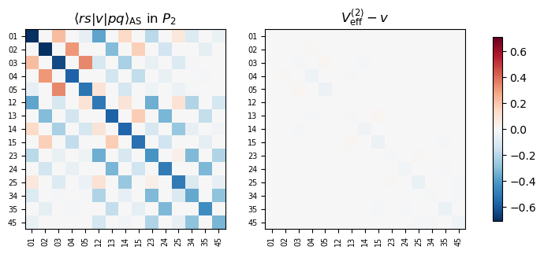
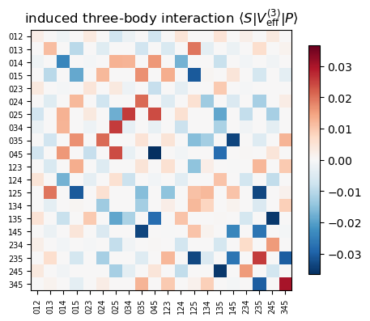
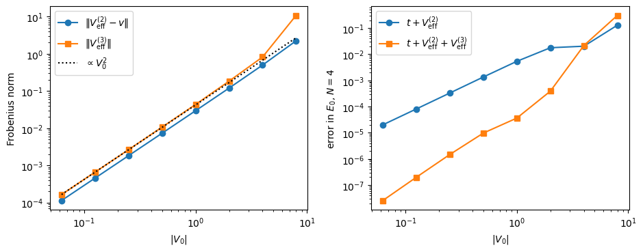
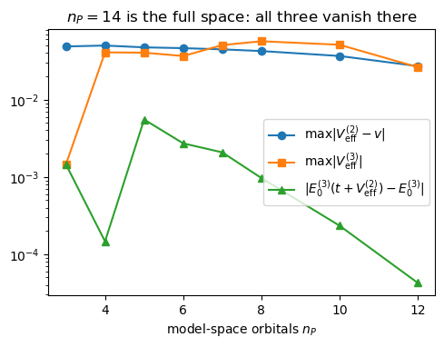
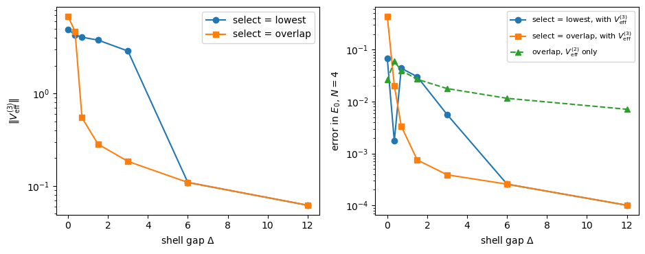

Project 2: effective interactions and induced three-body forces from full configuration interaction#
Companion notebook to Appendix A, Project 2, of Quantum mechanics for
many-particle systems. The code is the same as in
BookManybody/BookPrograms/appendixA/effective3b.py, which builds on the
bit-string machinery of the chapter-5 program fci.py; the notebook runs it
section by section and derives the formulas it implements.
Chapter 5 made two statements that sit uneasily together. Full configuration interaction is exact: in the basis of all Slater determinants that a set of \(n\) single-particle states allows, the eigenvalue problem gives every eigenpair of \(\hat H\), and every later method is a truncation of it. And the exponential wall, \(\dim\mathcal H =\binom{n}{N}\), puts that exact solution out of reach as soon as \(n\) and \(N\) are both moderately large. The truncations of chapter 5 (CIS, CID, CISD) cut the expansion by excitation level and keep the single-particle basis. This project cuts the other way: we keep every excitation level – we still diagonalise – but in a model space \(P\) spanned by the determinants that can be built from the \(n_P<n\) lowest orbitals alone. That is the shell model of nuclear physics and the complete-active-space method of quantum chemistry, and it raises the question every such calculation has to answer: which interaction should be diagonalised in the small space?
The classical answer is an effective interaction, constructed in chapter 9 by perturbation theory. Here we take the non-perturbative route, open whenever the few-body problem can be solved exactly in the large space. Given the exact eigenpairs, the Lee-Suzuki-Okubo similarity transformation produces an effective Hamiltonian in \(P\) that reproduces a chosen set of exact eigenvalues. Doing this for two particles gives an effective two-body interaction \(V^{(2)}_{\rm eff}\); doing it for three particles gives an effective three-body Hamiltonian, and the part of it that is not the sum of embedded one- and two-body operators is an induced effective three-body interaction
This is the a-body cluster construction of the no-core shell model (Navrátil, Vary and Barrett, Phys. Rev. Lett. 84, 5728 (2000); Navrátil and Ormand, Phys. Rev. C 68, 034305 (2003)), and it is the same logic by which the similarity renormalisation group generates induced three-body forces. We implement it on a toy model small enough that every step can be checked by a full diagonalisation in the large space: spinless fermions in a one-dimensional harmonic oscillator with a Gaussian interaction.
Contents:
The model space as a truncated FCI basis
The Lee-Suzuki-Okubo transformation: derivation
Cluster decomposition and induced many-body forces: derivation
The model
The effective two-body interaction (\(a=2\))
The induced three-body interaction (\(a=3\))
Four particles: does the hierarchy converge?
Dependence on the coupling strength
Dependence on the size of the model space
Intruder states and the choice of eigenvectors
Summary and tasks
1. The model space as a truncated FCI basis#
The Hamiltonian is the usual one- plus two-body operator of chapter 3,
in a single-particle basis of \(n\) orbitals. For \(N\) particles the full
space is the FCI space of chapter 5: the \(\binom{n}{N}\) determinants
\(|p_1p_2\ldots p_N\rangle=a^\dagger_{p_1}\cdots a^\dagger_{p_N}|0\rangle\)
with \(p_1<\cdots<p_N\), each stored as a bit string exactly as in fci.py.
The model space is defined at the single-particle level: the \(n_P<n\)
lowest orbitals. For \(N\) particles the model space \(P_N\) is spanned by all
\(\binom{n_P}{N}\) determinants built from these orbitals alone, and its
complement \(Q_N=1-P_N\) contains every determinant with at least one particle
in an excluded orbital. The projectors \(P\) and \(Q\) are the many-dimensional
counterparts of the one-dimensional pair of chapter 9.
Note the difference from the truncations of chapter 5. There CIS, CID and CISD cut by excitation level with respect to a reference determinant and kept the full single-particle basis. Here the truncation is in the single-particle basis and complete in excitation level: within \(P_N\) every \(np\)-\(nh\) excitation of the lowest determinant is present, so the model-space calculation is a full CI, only in a small space. Defining \(P\) through the orbitals, rather than through the total energy of the determinants, is what makes the product structure \(P_N\subset P_{N-1}\otimes P_1\) hold, and we shall need that structure to embed a two-body operator defined on \(P_2\) into \(P_3\) and \(P_4\).
The goal is an effective Hamiltonian \(H_{\rm eff}^{(N)}\) acting in \(P_N\) whose eigenvalues are exact eigenvalues of \(\hat H\), written as a sum of one-, two- and three-body operators that we obtain from the one-, two- and three-particle problems only. If that works, we can attack an \(N\)-particle system, for which the full space is out of reach, with the FCI machinery of chapter 5 in the small space \(P_N\), with
2. The Lee-Suzuki-Okubo transformation: derivation#
Decoupling by a similarity transformation#
Let \(P\) and \(Q\) be the projectors on the model space and its complement in the \(N\)-particle space, with \(d_P=\dim P\). We look for a similarity transformation \(\tilde H=e^{-\omega}\hat He^{\omega}\) such that \(\tilde H\) does not connect \(P\) to \(Q\),
The reader will recognise the structure of coupled-cluster theory (chapter 10): there the similarity transformation \(e^{-\hat T}\hat He^{\hat T}\) is required to have no matrix elements from the reference determinant to the excited ones, and the amplitude equations are a decoupling condition of exactly this type for a one-dimensional model space.
Following Lee and Suzuki we take \(\omega\) to map \(P\) into \(Q\) and nothing else, \(\omega=Q\omega P\). Then \(\omega^2=Q\omega P\,Q\omega P=0\), so the exponentials terminate: \(e^{\omega}=1+\omega\) and \(e^{-\omega}=1-\omega\), and
Inserting this into the decoupling condition gives a quadratic (Riccati) equation for \(\omega\),
which is what the iterative Lee-Suzuki schemes solve, and which reduces, for a one-dimensional \(P\), to the nonlinear equation for the correlation coefficients that chapter 5 solves by iteration. When the exact eigenpairs are available there is a closed-form solution. Pick \(d_P\) eigenstates \(\hat H|k\rangle=E_k|k\rangle\) whose projections \(P|k\rangle\) are linearly independent, and define \(\omega\) by
Since the \(P|k\rangle\) span \(P\) this fixes \(\omega\) completely. With this choice \((1+\omega)P|k\rangle=P|k\rangle+Q|k\rangle=|k\rangle\), and therefore
because \((1-\omega)(1+\omega)=1-\omega^2=1\). The \(d_P\) vectors \(P|k\rangle\) are eigenvectors of \(\tilde H\) lying entirely in \(P\), so \(Q\tilde HP=0\) and the model-space block
has exactly the chosen eigenvalues \(E_k\). This is the Lee-Suzuki effective Hamiltonian. It is not Hermitian: the \(P|k\rangle\) are not orthogonal even though the \(|k\rangle\) are.
Matrix form#
Collect the chosen eigenvectors as the columns of an \(n\times d_P\) matrix \(K\), and write \(PK\) and \(QK\) for its rows inside \(P\) and \(Q\). The defining relation reads \(QK=\omega\,PK\), so
and the requirement that the \(P|k\rangle\) be linearly independent is the requirement that the \(d_P\times d_P\) matrix \(PK\) be invertible. Its condition number is the first thing to look at when the construction misbehaves (Section 10).
The Hermitian (Okubo) form#
The map \(X=(P+\omega)\) sends \(P|k\rangle\) to \(|k\rangle\), i.e. it maps the model space one-to-one onto the subspace spanned by the chosen exact eigenstates. It is not unitary; its metric is
The operator \(U=XS^{-1/2}\) is an isometry from \(P\) onto that subspace (\(U^\dagger U=S^{-1/2}X^\dagger XS^{-1/2}=P\)), so the Hamiltonian restricted to the chosen eigenstates and expressed in an orthonormal basis of \(P\) is
This is Okubo’s Hermitian effective Hamiltonian. It is unitarily equivalent to \(\hat H\) on the chosen subspace, so it has exactly the eigenvalues \(E_k\), and it is what we shall use. A compact formula follows from \(X\,PK=K\), i.e. \(X=K(PK)^{-1}\) on \(P\):
The class LeeSuzuki evaluates precisely this, sector by sector for each
conserved quantum number, and also returns the non-Hermitian form for
comparison.
What is not fixed by the construction#
Two choices have been made. First, which \(d_P\) eigenstates to reproduce: the lowest ones in each symmetry sector is the natural choice when the model space is well separated in energy from its complement, but in general the \(d_P\) states with the largest norm inside \(P\) are the safer choice (Section 10). Second, the Hermitisation: any unitary on \(P\) gives another equally valid \(H_{\rm eff}\). An effective interaction is therefore never unique; what is fixed is the spectrum it reproduces. The Bloch-Horowitz energy-dependent effective Hamiltonian \(H_{\rm eff}(E)=P\hat HP+P\hat HQ(E-Q\hat HQ)^{-1}Q\hat HP\) reproduces the same eigenvalues when \(E\) is set self-consistently to each \(E_k\) – it is the Brillouin-Wigner form of chapter 9 for a degenerate model space; the Lee-Suzuki construction is the energy-independent (folded-diagram) version.
3. Cluster decomposition and induced many-body forces: derivation#
A \(k\)-body operator is fixed by its \(k\)-particle matrix elements#
A \(k\)-body operator is, in second quantisation,
The antisymmetry of the matrix elements lets us restrict both sums to ordered tuples \(S=(s_1<\cdots<s_k)\) and \(P=(p_1<\cdots<p_k)\), absorbing the \((k!)^2\):
where \(|P\rangle=a^\dagger_P|0\rangle\) is a \(k\)-particle Slater determinant. On the \(k\)-particle space \(a^\dagger_Sa_P|P'\rangle=\delta_{PP'}|S\rangle\), so the right-hand side reproduces the matrix of \(\hat O\) between \(k\)-particle determinants, and since a normal-ordered \(k\)-body operator is uniquely determined by these matrix elements, the identity holds on the whole Fock space. In particular it tells us how to embed a \(k\)-body operator in the \(N\)-particle space: for \(N\)-particle determinants \(|D\rangle\) and \(|D'\rangle\),
where the sum runs over the \(k\)-subsets \(P\) of the occupied orbitals of \(D\),
and \(\langle D'|a^\dagger_Sa_P|D\rangle\) is \(\pm1\) if removing \(P\) from \(D\)
and adding \(S\) gives \(D'\), and zero otherwise. The sign is the fermionic phase of the bit-string representation, and the
whole formula is exactly what KBodyOperator.embed computes with the
annihilate and create routines of fci.py, for any \(k\). The
Condon-Slater rules of chapter 3 are the special cases \(k=1\) and \(k=2\):
the one-body Hamiltonian is \(k=1\) with matrix \(h_{pq}\), the bare
interaction is \(k=2\) with \(\langle rs|\hat v|pq\rangle_{\rm AS}\), and the
band structure of the FCI matrix in chapter 5 is the statement that the
formula vanishes when \(D\) and \(D'\) differ by more than \(k\) orbitals. The
effective three-body interaction we are after will be a \(k=3\) operator
given by its matrix in the three-particle model space \(P_3\), and exercise
2 of chapter 5 has already told us what it does to the band structure.
The \(a\)-body cluster hierarchy#
Solve the \(a\)-particle problem exactly and construct \(H^{(a)}_{\rm eff}\) in \(P_a\) for \(a=1,2,3,\ldots\) Each \(H^{(a)}_{\rm eff}\) is a matrix on the \(a\)-particle model space, hence, by the identity above, an \(a\)-body operator. Define recursively
and so on, where every operator on the right is embedded into the \(a\)-particle model space with the recipe above. By construction the \(a\)-particle effective Hamiltonian truncated at cluster level \(a\) is exact, and for \(N>a\) particles
is the a-body cluster approximation when the series is stopped after \(a\)-body terms. Here \(V^{(1)}_{\rm eff}\) is trivial: the one-body Hamiltonian is diagonal in the oscillator basis, so the one-particle model space is already exact and \(V^{(1)}_{\rm eff}=t\). In the presence of a one-body field with off-diagonal elements between \(P\) and \(Q\) this step would be non-trivial too.
Why the hierarchy rather than the \(N\)-body problem itself? Because the decomposition of an \(N\)-body operator into one-, two- and three-body pieces is not unique when we only know its matrix elements in the \(N\)-particle sector: an \(N\)-body effective Hamiltonian has \(d_{P_N}^2\) matrix elements, far more than a \(1+2+3\)-body operator has, so the inverse problem is overdetermined and any solution is a fit. The \(a\)-particle sectors, in contrast, determine the \(a\)-body operators uniquely, and a particle-number conserving unitary transformation of \(\hat H\) on Fock space has a well-defined cluster decomposition obtained sector by sector in exactly this way.
Why an induced three-body force appears at all#
The bare Hamiltonian has no three-body term. The induced term arises because the decoupling transformation acts on the three-particle system as a whole. Perturbatively, in second order the model-space Hamiltonian is \(P\hat HP+P\hat V Q(E_0-\hat H_0)^{-1}Q\hat VP\). Among the terms in the three-particle space are connected ones in which particle 1 is excited into \(Q\) by interacting with particle 2 and brought back by interacting with particle 3. No two-body operator embedded with a spectator can produce such a term; it is a genuine three-body operator of order \(v^2\). We shall see the quadratic scaling in Section 8. The Lee-Suzuki \(\omega\) resums these diagrams to all orders, together with the folded diagrams that remove the energy dependence.
The same mechanism produces the induced three-body forces of the similarity renormalisation group, where the unitary transformation is generated by a flow equation instead of being read off from eigenvectors, and it is the reason why the no-core shell model needs at least the three-body cluster approximation when the bare interaction is softened. Conversely, once \(V^{(3)}_{\rm eff}\) is known, normal ordering with respect to a reference determinant turns most of it into zero-, one- and two-body pieces (chapter 3), which is how three-body forces enter mean-field, coupled-cluster and in-medium SRG calculations at two-body cost – the procedure anticipated in the answer to exercise 2 of chapter 5.
4. The model#
We take spinless fermions in a one-dimensional harmonic oscillator (\(\hbar=m=\omega=1\)) with the Gaussian interaction
The single-particle basis consists of the \(n=14\) lowest oscillator functions \(\varphi_0,\ldots,\varphi_{13}\) and the model space of the \(n_P=6\) lowest. The two-body matrix elements \(\langle pq|v|rs\rangle=\int dx\,dy\,\varphi_p(x)\varphi_q(y)v(x-y)\varphi_r(x)\varphi_s(y)\) are computed on a grid; parity is the only conserved quantum number of a determinant and the Lee-Suzuki construction is carried out separately in the even and odd sectors.
One modification of the pure oscillator is essential. The single-particle energies are \(\epsilon_n=n+\tfrac12\), so the three-particle determinant \(|345\rangle\) of the model space, with \(13.5\) units of energy, is degenerate with the excluded determinants \(|0\,1\,12\rangle\), \(|0\,2\,11\rangle\), \(|1\,2\,10\rangle\), and so on: for an orbital truncation of the oscillator the top of \(P\) overlaps in energy with the bottom of \(Q\) as soon as \(N\ge2\). These intruder states make the effective interaction ill-defined in the limit of weak coupling (the exact eigenstates are then arbitrary mixtures of degenerate \(P\) and \(Q\) determinants) and are the classic obstacle to effective-interaction theory, analysed by Schucan and Weidenmüller in 1972. The no-core shell model avoids them by truncating on the total number of oscillator quanta rather than orbital by orbital. We keep the orbital truncation, because it gives the product structure of Section 1, and instead open a shell gap: the excluded orbitals are shifted up by \(\Delta\),
With \(\Delta=3\) the model space is well separated for \(N\le4\). Section 10 turns \(\Delta\) back down and shows the intruders arrive.
The bootstrap cell below puts every BookPrograms/chapter* and
BookPrograms/appendix* directory on the path, because effective3b.py
imports the bit-string routines of the chapter-5 program fci.py.
import sys, os, glob
import numpy as np
import matplotlib.pyplot as plt
from scipy.linalg import eigh
# the chapter programs live in BookPrograms/chapterNN and the appendix
# programs in BookPrograms/appendixX; put them all on the path
for _pattern in ("chapter*", "appendix*"):
for _d in sorted(glob.glob(os.path.join("..", "BookManybody",
"BookPrograms", _pattern))):
if _d not in sys.path:
sys.path.insert(0, _d)
import effective3b as e3
np.set_printoptions(precision=6, suppress=True, linewidth=120)
n, n_P = 14, 6 # single-particle orbitals: full space and model space
V0, sigma = -2.0, 1.0 # Gaussian interaction
gap = 3.0 # shell gap between model space and excluded space
ho = e3.HarmonicOscillator1D(n)
h = ho.one_body(gap=gap, n_P=n_P)
v = ho.two_body(e3.gaussian(V0, sigma))
print("single-particle energies:", np.diag(h))
print("a few antisymmetrised matrix elements <pq|v|rs>_AS:")
for (p, q, r, s) in [(0, 1, 0, 1), (0, 1, 2, 3), (0, 2, 1, 3), (2, 3, 4, 5)]:
print(f" <{p}{q}|v|{r}{s}> = {v[p, q, r, s]: .6f}")
single-particle energies: [ 0.5 1.5 2.5 3.5 4.5 5.5 9.5 10.5 11.5 12.5 13.5 14.5 15.5 16.5]
a few antisymmetrised matrix elements <pq|v|rs>_AS:
<01|v|01> = -0.707107
<01|v|23> = -0.191366
<02|v|13> = -0.306186
<23|v|45> = -0.213745
The bare Hamiltonian is assembled from the one- and two-body operators by the embedding routine of Section 3. As a check on the machinery we compare the diagonal matrix element of a determinant with the Condon-Slater rule of chapter 3 \(\langle D|\hat H|D\rangle=\sum_{p\in D}h_{pp}+\sum_{p<q\in D}\langle pq|v|pq\rangle_{\rm AS}\) and confirm that the matrix is symmetric.
h1 = e3.KBodyOperator.from_one_body(h)
v2 = e3.KBodyOperator.from_two_body(v)
B3 = e3.DeterminantBasis(range(n), 3)
H3 = h1.embed(B3) + v2.embed(B3)
D = (0, 3, 7)
i = B3.index[D]
slater_condon = sum(h[p, p] for p in D) + sum(v[p, q, p, q] for p in D for q in D if p < q)
print(f"{len(B3)} three-particle determinants")
print(f"<{D}|H|{D}>: embedding {H3[i, i]:.10f}, Slater-Condon {slater_condon:.10f}")
print("symmetric:", np.allclose(H3, H3.T))
364 three-particle determinants
<(0, 3, 7)|H|(0, 3, 7)>: embedding 12.9655337238, Slater-Condon 12.9655337238
symmetric: True
5. The effective two-body interaction (\(a=2\))#
The class ClusterHierarchy runs the whole construction: it builds the
exact two- and three-particle Hamiltonians, applies the Lee-Suzuki-Okubo
transformation in each parity sector, and subtracts the embedded lower
clusters. We first look at the two-particle step.
ch = e3.ClusterHierarchy(h, v, n_P, orbital_parity=ho.parity(), select="overlap")
ls2 = ch.ls[2]
B2, B2P = ch.basis(2), ch.basis(2, model=True)
print(f"two-particle space: {len(B2)} determinants, model space: {len(B2P)}")
print("condition number of PK in each parity sector:", ls2.condition_numbers)
print("norm of omega in each sector: ", ls2.omega_norm)
print(f"max |eig(H_eff) - E_k| = {ls2.check():.2e}")
print("H_eff Hermitian:", np.allclose(ls2.H_eff, ls2.H_eff.T))
print("non-Hermitian Lee-Suzuki form has the same spectrum:",
np.allclose(np.sort(np.linalg.eigvals(ls2.H_eff_nonhermitian).real),
ls2.chosen_energies))
two-particle space: 91 determinants, model space: 15
condition number of PK in each parity sector: {-1: 1.0066742242017943, 1: 1.0064412828084044}
norm of omega in each sector: {-1: 0.18102973095030403, 1: 0.17551150391063217}
max |eig(H_eff) - E_k| = 7.11e-15
H_eff Hermitian: True
non-Hermitian Lee-Suzuki form has the same spectrum: True
The effective two-body interaction \(V^{(2)}_{\rm eff}=H^{(2)}_{\rm eff}-t_1-t_2\) differs from the bare interaction restricted to \(P\) by the renormalisation that virtual excitations into \(Q\) produce. The two lowest exact two-particle energies are reproduced by \(t+V^{(2)}_{\rm eff}\) in \(P_2\) exactly, while \(P\hat HP\) with the bare interaction misses them.
T2 = ch.h_P.embed(B2P)
E_exact = eigh(ch.bare_hamiltonian(2), eigvals_only=True)[:len(B2P)]
E_bare = eigh(T2 + ch.V2_bare.embed(B2P), eigvals_only=True)
E_eff = eigh(T2 + ch.V2_eff.embed(B2P), eigvals_only=True)
print("lowest two-particle energies")
print(" exact :", E_exact[:5])
print(" bare in P :", E_bare[:5])
print(" V2_eff in P:", E_eff[:5])
print(f"\n||V2_bare|| = {ch.V2_bare.norm():.4f}, ||V2_eff|| = {ch.V2_eff.norm():.4f}, "
f"||V2_eff - V2_bare|| = {(ch.V2_eff - ch.V2_bare).norm():.4f}")
fig, ax = plt.subplots(1, 2, figsize=(9, 3.8))
vmax = np.max(np.abs(ch.V2_eff.matrix))
labels = ["".join(map(str, d)) for d in B2P.dets]
for a, (M, title) in zip(ax, [(ch.V2_bare.matrix, r"$\langle rs|v|pq\rangle_{\rm AS}$ in $P_2$"),
((ch.V2_eff - ch.V2_bare).matrix, r"$V^{(2)}_{\rm eff}-v$")]):
im = a.imshow(M, cmap="RdBu_r", vmin=-vmax, vmax=vmax)
a.set_title(title)
a.set_xticks(range(len(labels))); a.set_xticklabels(labels, rotation=90, fontsize=7)
a.set_yticks(range(len(labels))); a.set_yticklabels(labels, fontsize=7)
fig.colorbar(im, ax=ax, shrink=0.8)
plt.show()
lowest two-particle energies
exact : [1.184833 2.187946 3.19293 3.574968 4.222133]
bare in P : [1.18655 2.194871 3.20631 3.580234 4.253854]
V2_eff in P: [1.184833 2.187946 3.19293 3.574968 4.222133]
||V2_bare|| = 2.7350, ||V2_eff|| = 2.8199, ||V2_eff - V2_bare|| = 0.1198

6. The induced three-body interaction (\(a=3\))#
Now the three-particle problem. \(H^{(3)}_{\rm eff}\) is a \(20\times20\) matrix in \(P_3\) that reproduces twenty exact three-particle energies. Subtracting the embedded one-body part and the embedded \(V^{(2)}_{\rm eff}\) leaves the induced three-body interaction \(V^{(3)}_{\rm eff}\), again a \(20\times20\) matrix, which by Section 3 defines a three-body operator on Fock space.
ls3 = ch.ls[3]
B3P = ch.basis(3, model=True)
print(f"three-particle space: {len(ch.basis(3))} determinants, model space: {len(B3P)}")
print("condition number of PK in each parity sector:", ls3.condition_numbers)
print(f"max |eig(H_eff) - E_k| = {ls3.check():.2e}")
spectra3 = ch.model_space_spectra(3, n_states=6)
print("\nlowest three-particle energies")
for label, E in spectra3.items():
print(f" {label:22s}", E)
three-particle space: 364 determinants, model space: 20
condition number of PK in each parity sector: {-1: 1.017576367846106, 1: 1.0219656153225432}
max |eig(H_eff) - E_k| = 2.13e-14
lowest three-particle energies
exact [2.310362 3.324123 4.392015 4.728877 5.394779 5.785757]
bare (PHP) [2.325412 3.357059 4.462551 4.78783 5.469447 5.865945]
h + V2_eff [2.307649 3.318338 4.407699 4.745798 5.395576 5.816277]
h + V2_eff + V3_eff [2.310362 3.324123 4.392015 4.728877 5.394779 5.785757]
With \(t+V^{(2)}_{\rm eff}\) alone the three-particle energies are already much better than with the bare interaction, but they are not exact: the residual is what \(V^{(3)}_{\rm eff}\) repairs, by construction exactly. Its size can be gauged in three ways: the Frobenius norm of its matrix, its largest matrix element, and its expectation value in the exact ground state.
V3 = ch.V3_eff
print(f"||V2_eff|| = {ch.V2_eff.norm():.4f}, ||V3_eff|| = {V3.norm():.4f}, "
f"ratio {V3.norm() / ch.V2_eff.norm():.3f}")
print(f"largest |<S|V3_eff|P>| = {np.max(np.abs(V3.matrix)):.4f}, "
f"largest |<rs|V2_eff|pq>| = {np.max(np.abs(ch.V2_eff.matrix)):.4f}")
print("Hermitian:", np.allclose(V3.matrix, V3.matrix.T))
# ground-state expectation value of V3_eff in the model space
T3 = ch.h_P.embed(B3P)
E, C = eigh(T3 + ch.V2_eff.embed(B3P) + V3.embed(B3P))
gs = C[:, 0]
print(f"<gs|V3_eff|gs> = {gs @ V3.matrix @ gs: .5f} (E_gs = {E[0]:.5f})")
labels3 = ["".join(map(str, d)) for d in B3P.dets]
fig, ax = plt.subplots(figsize=(5.2, 4.6))
vmax = np.max(np.abs(V3.matrix))
im = ax.imshow(V3.matrix, cmap="RdBu_r", vmin=-vmax, vmax=vmax)
ax.set_xticks(range(len(labels3))); ax.set_xticklabels(labels3, rotation=90, fontsize=7)
ax.set_yticks(range(len(labels3))); ax.set_yticklabels(labels3, fontsize=7)
ax.set_title(r"induced three-body interaction $\langle S|V^{(3)}_{\rm eff}|P\rangle$")
fig.colorbar(im, ax=ax, shrink=0.8)
plt.show()
||V2_eff|| = 2.8199, ||V3_eff|| = 0.1843, ratio 0.065
largest |<S|V3_eff|P>| = 0.0367, largest |<rs|V2_eff|pq>| = 0.7102
Hermitian: True
<gs|V3_eff|gs> = 0.00263 (E_gs = 2.31036)

The block structure is parity: even and odd three-particle determinants do not mix. The largest elements involve the highest model-space orbitals, which are closest to the excluded space and feel the decoupling most.
7. Four particles: does the hierarchy converge?#
The real test is a system we did not use to build the interactions. For four particles the full space has \(\binom{14}{4}=1001\) determinants and the model space \(\binom{6}{4}=15\). We compare the exact spectrum with the model-space spectra obtained with the bare interaction, with \(t+V^{(2)}_{\rm eff}\), and with \(t+V^{(2)}_{\rm eff}+V^{(3)}_{\rm eff}\). The remaining discrepancy is the induced four-body interaction, which we can also extract by carrying the hierarchy one step further.
spectra4 = ch.model_space_spectra(4, n_states=6)
print("lowest four-particle energies")
for label, E in spectra4.items():
print(f" {label:22s}", E)
print("\nerrors in the ground-state energy:")
for label, E in spectra4.items():
if label != "exact":
print(f" {label:22s} {E[0] - spectra4['exact'][0]: .2e}")
lowest four-particle energies
exact [4.016621 5.138837 6.133578 6.533993 7.292868 7.719233]
bare (PHP) [4.072766 5.266284 6.260734 6.704104 7.466165 7.82506 ]
h + V2_eff [3.998842 5.167793 6.127434 6.608091 7.326293 7.712288]
h + V2_eff + V3_eff [4.016232 5.137136 6.13501 6.534664 7.288118 7.723718]
errors in the ground-state energy:
bare (PHP) 5.61e-02
h + V2_eff -1.78e-02
h + V2_eff + V3_eff -3.89e-04
V4 = ch.add_four_body()
print(f"||V2_eff|| = {ch.V2_eff.norm():.4f} ||V3_eff|| = {ch.V3_eff.norm():.4f} "
f"||V4_eff|| = {V4.norm():.4f}")
print(f"largest elements: {np.max(np.abs(ch.V2_eff.matrix)):.4f} "
f"{np.max(np.abs(ch.V3_eff.matrix)):.4f} {np.max(np.abs(V4.matrix)):.4f}")
E4 = ch.model_space_spectra(4, n_states=4)["h + V2_eff + V3_eff + V4_eff"]
print("with V4_eff the four-particle spectrum is exact:",
np.allclose(E4, spectra4["exact"][:4]))
||V2_eff|| = 2.8199 ||V3_eff|| = 0.1843 ||V4_eff|| = 0.1009
largest elements: 0.7102 0.0367 0.0348
with V4_eff the four-particle spectrum is exact: True
The hierarchy converges. The renormalisation of the two-body interaction is an order of magnitude larger than the induced three-body term, and the induced four-body term is smaller still, though by a smaller factor. In the energies the effect is clearer: the two-body cluster approximation leaves an error of about \(2\times10^{-2}\) in the four-particle ground state, the three-body cluster approximation reduces it to \(4\times10^{-4}\), one part in \(10^4\) of the interaction energy, and the four-body term makes the spectrum exact by construction. This is the pattern one hopes for, and, for realistic nuclear interactions, the pattern the no-core shell model relies on.
8. Dependence on the coupling strength#
Section 3 argued that the induced three-body force is a second-order effect in the interaction. We scan \(V_0\) and plot the norms of \(V^{(2)}_{\rm eff}-v\) and of \(V^{(3)}_{\rm eff}\); both should scale as \(V_0^2\) for weak coupling, where the perturbative picture applies, and depart from it when the coupling becomes strong.
couplings = np.array([0.0625, 0.125, 0.25, 0.5, 1.0, 2.0, 4.0, 8.0])
dV2, V3n, V4n, err3, err4 = [], [], [], [], []
for c in couplings:
chc = e3.ClusterHierarchy(h, ho.two_body(e3.gaussian(-c, sigma)), n_P,
orbital_parity=ho.parity(), select="overlap")
dV2.append((chc.V2_eff - chc.V2_bare).norm())
V3n.append(chc.V3_eff.norm())
s4 = chc.model_space_spectra(4, n_states=1)
err3.append(abs(s4["h + V2_eff"][0] - s4["exact"][0]))
err4.append(abs(s4["h + V2_eff + V3_eff"][0] - s4["exact"][0]))
print(f"V0 = {-c:7.4f}: ||V2_eff - v|| = {dV2[-1]:.3e} ||V3_eff|| = {V3n[-1]:.3e} "
f"N=4 error with V2: {err3[-1]:.2e}, with V2+V3: {err4[-1]:.2e}")
fig, ax = plt.subplots(1, 2, figsize=(9.5, 3.8))
ax[0].loglog(couplings, dV2, "o-", label=r"$\|V^{(2)}_{\rm eff}-v\|$")
ax[0].loglog(couplings, V3n, "s-", label=r"$\|V^{(3)}_{\rm eff}\|$")
ax[0].loglog(couplings, V3n[0] * (couplings / couplings[0]) ** 2, "k:", label=r"$\propto V_0^2$")
ax[0].set_xlabel(r"$|V_0|$"); ax[0].set_ylabel("Frobenius norm"); ax[0].legend()
ax[1].loglog(couplings, err3, "o-", label=r"$t+V^{(2)}_{\rm eff}$")
ax[1].loglog(couplings, err4, "s-", label=r"$t+V^{(2)}_{\rm eff}+V^{(3)}_{\rm eff}$")
ax[1].set_xlabel(r"$|V_0|$"); ax[1].set_ylabel(r"error in $E_0$, $N=4$"); ax[1].legend()
plt.tight_layout(); plt.show()
V0 = -0.0625: ||V2_eff - v|| = 1.139e-04 ||V3_eff|| = 1.647e-04 N=4 error with V2: 2.01e-05, with V2+V3: 2.58e-08
V0 = -0.1250: ||V2_eff - v|| = 4.561e-04 ||V3_eff|| = 6.599e-04 N=4 error with V2: 8.14e-05, with V2+V3: 2.00e-07
V0 = -0.2500: ||V2_eff - v|| = 1.827e-03 ||V3_eff|| = 2.650e-03 N=4 error with V2: 3.31e-04, with V2+V3: 1.48e-06
V0 = -0.5000: ||V2_eff - v|| = 7.330e-03 ||V3_eff|| = 1.069e-02 N=4 error with V2: 1.35e-03, with V2+V3: 9.73e-06
V0 = -1.0000: ||V2_eff - v|| = 2.951e-02 ||V3_eff|| = 4.350e-02 N=4 error with V2: 5.39e-03, with V2+V3: 3.65e-05
V0 = -2.0000: ||V2_eff - v|| = 1.198e-01 ||V3_eff|| = 1.843e-01 N=4 error with V2: 1.78e-02, with V2+V3: 3.89e-04
V0 = -4.0000: ||V2_eff - v|| = 4.984e-01 ||V3_eff|| = 8.213e-01 N=4 error with V2: 2.03e-02, with V2+V3: 2.16e-02
V0 = -8.0000: ||V2_eff - v|| = 2.235e+00 ||V3_eff|| = 1.079e+01 N=4 error with V2: 1.29e-01, with V2+V3: 3.06e-01

At weak coupling both curves follow the \(V_0^2\) line, confirming the diagrammatic argument, and the three-body cluster approximation improves the four-particle ground state by two to three orders of magnitude. As the coupling grows the induced three-body term becomes larger than the renormalisation of the two-body term itself, and the induced four-body term, visible as the error that remains after including \(V^{(3)}_{\rm eff}\), grows faster still: at \(V_0=-4\) adding \(V^{(3)}_{\rm eff}\) no longer improves the four-particle ground state and at \(V_0=-8\) it makes it worse. The cluster expansion converges more slowly the harder the interaction, which is the reason for softening realistic interactions before they are used in a small space.
9. Dependence on the size of the model space#
Enlarging the model space (keeping the gap \(\Delta\) above its top) should make the effective interactions approach the bare ones and the induced three-body term vanish. When \(n_P=n\) there is nothing to decouple, \(\omega=0\), and \(V^{(3)}_{\rm eff}\) must be zero to machine precision. Because the number of three-body matrix elements grows with \(n_P\), the Frobenius norm is not the right measure across model spaces; we monitor the largest matrix element and the error of the three-particle ground state obtained with \(t+V^{(2)}_{\rm eff}\) alone, which is the energy shift \(V^{(3)}_{\rm eff}\) has to supply.
sizes = [3, 4, 5, 6, 7, 8, 10, 12, 14]
v_default = ho.two_body(e3.gaussian(V0, sigma))
maxV3, shift3, maxdV2 = [], [], []
for nP in sizes:
hP = ho.one_body(gap=gap, n_P=nP)
chP = e3.ClusterHierarchy(hP, v_default, nP, orbital_parity=ho.parity(), select="overlap")
s3 = chP.model_space_spectra(3, n_states=1)
maxV3.append(np.max(np.abs(chP.V3_eff.matrix)))
maxdV2.append(np.max(np.abs((chP.V2_eff - chP.V2_bare).matrix)))
shift3.append(abs(s3["h + V2_eff"][0] - s3["exact"][0]))
print(f"n_P = {nP:2d}: dim P_3 = {len(chP.basis(3, model=True)):4d} "
f"max|V2_eff - v| = {maxdV2[-1]:.2e} max|V3_eff| = {maxV3[-1]:.2e} "
f"E_0(N=3) error with V2_eff only = {shift3[-1]:.2e}")
fig, ax = plt.subplots(figsize=(5.5, 3.8))
ax.semilogy(sizes[:-1], maxdV2[:-1], "o-", label=r"$\max|V^{(2)}_{\rm eff}-v|$")
ax.semilogy(sizes[:-1], maxV3[:-1], "s-", label=r"$\max|V^{(3)}_{\rm eff}|$")
ax.semilogy(sizes[:-1], shift3[:-1], "^-", label=r"$|E_0^{(3)}(t+V^{(2)}_{\rm eff})-E_0^{(3)}|$")
ax.set_xlabel(r"model-space orbitals $n_P$"); ax.legend()
ax.set_title(r"$n_P=14$ is the full space: all three vanish there")
plt.show()
n_P = 3: dim P_3 = 1 max|V2_eff - v| = 4.88e-02 max|V3_eff| = 1.45e-03 E_0(N=3) error with V2_eff only = 1.45e-03
n_P = 4: dim P_3 = 4 max|V2_eff - v| = 5.01e-02 max|V3_eff| = 4.09e-02 E_0(N=3) error with V2_eff only = 1.46e-04
n_P = 5: dim P_3 = 10 max|V2_eff - v| = 4.75e-02 max|V3_eff| = 4.05e-02 E_0(N=3) error with V2_eff only = 5.53e-03
n_P = 6: dim P_3 = 20 max|V2_eff - v| = 4.64e-02 max|V3_eff| = 3.67e-02 E_0(N=3) error with V2_eff only = 2.71e-03
n_P = 7: dim P_3 = 35 max|V2_eff - v| = 4.47e-02 max|V3_eff| = 5.08e-02 E_0(N=3) error with V2_eff only = 2.07e-03
n_P = 8: dim P_3 = 56 max|V2_eff - v| = 4.25e-02 max|V3_eff| = 5.69e-02 E_0(N=3) error with V2_eff only = 9.65e-04
n_P = 10: dim P_3 = 120 max|V2_eff - v| = 3.67e-02 max|V3_eff| = 5.13e-02 E_0(N=3) error with V2_eff only = 2.33e-04
n_P = 12: dim P_3 = 220 max|V2_eff - v| = 2.72e-02 max|V3_eff| = 2.63e-02 E_0(N=3) error with V2_eff only = 4.24e-05
n_P = 14: dim P_3 = 364 max|V2_eff - v| = 8.23e-13 max|V3_eff| = 3.26e-12 E_0(N=3) error with V2_eff only = 2.18e-14

The largest matrix elements of \(V^{(2)}_{\rm eff}-v\) and of \(V^{(3)}_{\rm eff}\) hardly decrease with \(n_P\): they always involve the highest model-space orbitals, which sit right below the gap whatever \(n_P\) is, and the gap itself is kept fixed. What does decrease, by almost two orders of magnitude from \(n_P=5\) to \(n_P=12\), is the effect of \(V^{(3)}_{\rm eff}\) on the ground state, because the orbitals where it is large move further and further away from the configurations that dominate the low-lying states. This is the way effective many-body forces disappear when the model space is enlarged: not element by element, but by becoming irrelevant for the states one cares about. In the full space, \(n_P=14\), all three quantities are zero to machine precision, which is a stringent test of the whole embedding and subtraction machinery.
10. Intruder states and the choice of eigenvectors#
Finally we close the shell gap. As \(\Delta\to0\) excluded determinants descend into the energy range of the model space. If we insist on reproducing the lowest \(d_P\) eigenvalues in each sector, some of the chosen eigenstates are intruders that live mostly in \(Q\); their projections on \(P\) are nearly linearly dependent, the condition number of \(PK\) explodes, and the effective interaction acquires huge, strongly state-dependent pieces that spoil the cluster hierarchy. Choosing instead the \(d_P\) eigenstates with the largest norm in \(P\) keeps \(PK\) well conditioned for moderate gaps, but when the gap vanishes even that fails: the exact states are then genuine \(P\)-\(Q\) mixtures and no choice of \(d_P\) of them spans the model space gracefully. We monitor the condition number, the size of \(V^{(3)}_{\rm eff}\), and the error of the four-particle ground state with \(t+V^{(2)}_{\rm eff}+V^{(3)}_{\rm eff}\).
gaps = [0.0, 0.35, 0.7, 1.5, 3.0, 6.0, 12.0]
rows = {"lowest": [], "overlap": []}
for g in gaps:
hg = ho.one_body(gap=g, n_P=n_P)
for sel in rows:
chg = e3.ClusterHierarchy(hg, v_default, n_P, orbital_parity=ho.parity(), select=sel)
s4 = chg.model_space_spectra(4, n_states=1)
rows[sel].append((max(chg.ls[3].condition_numbers.values()),
chg.V3_eff.norm(),
abs(s4["h + V2_eff + V3_eff"][0] - s4["exact"][0]),
abs(s4["h + V2_eff"][0] - s4["exact"][0])))
print(f"{'gap':>5s} | {'cond(PK), lowest':>17s} {'||V3||':>8s} {'N=4 err':>9s} | "
f"{'cond(PK), overlap':>18s} {'||V3||':>8s} {'N=4 err':>9s}")
for g, a, b in zip(gaps, rows["lowest"], rows["overlap"]):
print(f"{g:5.2f} | {a[0]:17.1f} {a[1]:8.3f} {a[2]:9.2e} | {b[0]:18.1f} {b[1]:8.3f} {b[2]:9.2e}")
fig, ax = plt.subplots(1, 2, figsize=(9.5, 3.8))
for sel, mk in (("lowest", "o-"), ("overlap", "s-")):
r = np.array(rows[sel])
ax[0].semilogy(gaps, r[:, 1], mk, label=f"select = {sel}")
ax[1].semilogy(gaps, r[:, 2], mk, label=f"select = {sel}, with $V^{{(3)}}_{{\\rm eff}}$")
ax[1].semilogy(gaps, np.array(rows["overlap"])[:, 3], "^--", label=r"overlap, $V^{(2)}_{\rm eff}$ only")
ax[0].set_xlabel(r"shell gap $\Delta$"); ax[0].set_ylabel(r"$\|V^{(3)}_{\rm eff}\|$"); ax[0].legend()
ax[1].set_xlabel(r"shell gap $\Delta$"); ax[1].set_ylabel(r"error in $E_0$, $N=4$"); ax[1].legend(fontsize=8)
plt.tight_layout(); plt.show()
gap | cond(PK), lowest ||V3|| N=4 err | cond(PK), overlap ||V3|| N=4 err
0.00 | 8745.6 4.943 6.77e-02 | 4202.3 6.842 4.38e-01
0.35 | 6931.6 4.313 1.74e-03 | 4504.2 4.693 2.04e-02
0.70 | 5788.1 4.066 4.40e-02 | 1.5 0.547 3.35e-03
1.50 | 4314.8 3.787 3.00e-02 | 1.0 0.284 7.51e-04
3.00 | 1521.1 2.883 5.60e-03 | 1.0 0.184 3.89e-04
6.00 | 1.0 0.109 2.57e-04 | 1.0 0.109 2.57e-04
12.00 | 1.0 0.062 1.01e-04 | 1.0 0.062 1.01e-04

For a large gap the two selection rules coincide and the hierarchy converges. Below \(\Delta\approx5\), the point where the highest model-space determinants start to overlap in energy with the lowest excluded ones, the “lowest” rule picks up intruders and \(V^{(3)}_{\rm eff}\) becomes as large as \(V^{(2)}_{\rm eff}\); the four-particle energy obtained with it improves erratically and for small gaps is worse than with \(V^{(2)}_{\rm eff}\) alone. The overlap rule survives down to \(\Delta\approx0.7\), but at \(\Delta=0\), the pure oscillator with orbital truncation, it fails as well. This is the intruder-state problem in its simplest incarnation and the reason why realistic calculations either truncate on total excitation energy (no-core shell model), or soften the interaction first so that the decoupling is mild (SRG, \(V_{{\rm low}\,k}\)), or both.
11. Summary and tasks#
Exact eigenpairs of the \(a\)-particle problem – full configuration interaction in the large space – define, through the Lee-Suzuki-Okubo transformation, an effective Hamiltonian in the \(a\)-particle model space that reproduces \(d_P\) exact eigenvalues. Because a \(k\)-body operator is fixed by its \(k\)-particle matrix elements, the \(a\)-particle effective Hamiltonians can be peeled apart cluster by cluster: the two-particle problem gives \(V^{(2)}_{\rm eff}\), the three-particle problem gives the induced \(V^{(3)}_{\rm eff}\), and so on. Applied to an \(N\)-particle system in the small space – full configuration interaction again, now affordable – the truncated hierarchy converges quickly when the model space is well separated from its complement and the interaction is not too strong, and it breaks down, through intruder states, when it is not. The induced three-body force is not an artefact to be removed but the price of working in a small space; it is of second order in the interaction and it is the same object that appears when a nuclear Hamiltonian is softened by the similarity renormalisation group.
Tasks (the full formulation is in Appendix A of the book; tasks a) to d) have reference solutions in this notebook, e) to g) are open)
a) Embedding and the Condon-Slater rules. Implement the embedding formula of section 3 on top of the bit-string routines of
fci.py, verify it for \(k=1,2\) against the Condon-Slater rules, and display the band structure of the three-particle Hamiltonian with respect to \(|012\rangle\) with and without \(V^{(3)}_{\rm eff}\) (exercise 2b of chapter 5).b) The Lee-Suzuki-Okubo transformation. Construct \(H_{\rm eff}\) for two particles in each parity sector, check Hermiticity and the spectrum, then solve the quadratic equation for \(\omega\) by the iteration \(\omega_{n+1}=(QHQ)^{-1}(\omega_nPHP+\omega_nPHQ\omega_n-QHP)\) from \(\omega_0=0\) and find out which solution it selects, and when it fails.
c) The cluster hierarchy. Extract \(V^{(2)}_{\rm eff}\), \(V^{(3)}_{\rm eff}\) and \(V^{(4)}_{\rm eff}\), reproduce the spectra of sections 6 and 7, and verify that all of them vanish when \(n_P=n\).
d) Scaling and intruders. Reproduce sections 8 to 10, fit the weak-coupling exponent, list the degenerate \(P\) and \(Q\) determinants of the pure oscillator, and propose a third selection rule.
e) Open: normal ordering. Normal order \(V^{(3)}_{\rm eff}\) with respect to \(|0123\rangle\) (chapter 3), keep the zero-, one- and two-body parts, and measure how much of the four-particle three-body effect the normal-ordered two-body approximation captures; then feed the normal-ordered Hamiltonian to the coupled-cluster code of chapter 10.
f) Open: second-order perturbation theory. Compute \(P\hat HP+P\hat VQ(E_0-\hat H_0)^{-1}Q\hat VP\) for three particles (chapter 9), isolate the connected three-body terms, and compare with \(V^{(3)}_{\rm eff}\) at \(V_0=-0.25\) and \(V_0=-2\).
g) Open: the similarity renormalisation group. Evolve the Hamiltonian with \(dH_s/ds=[[T,H_s],H_s]\) in the two- and three-particle spaces, extract the induced three-body term, combine softening with the model-space decoupling, and replace the orbital truncation by the \(N_{\max}\) truncation of the no-core shell model (Navrátil and Ormand, Phys. Rev. C 68, 034305 (2003)).